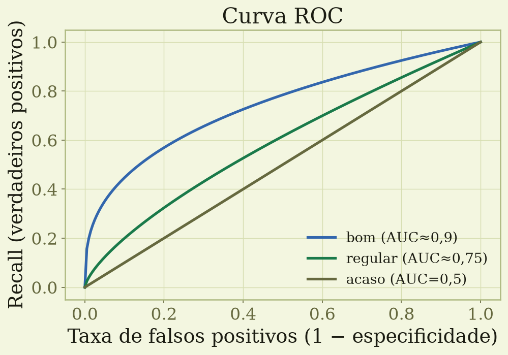
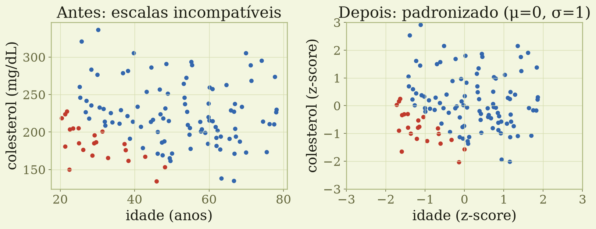

Triagem de câncer → priorize recall (não perder doentes)
Filtro de spam → priorize precisão (não descartar e-mail bom)
$F_1$ = média harmônica dos dois — só é alta quando ambos são altos
Acurácia engana em classes desbalanceadas: prever "sempre saudável" numa doença rara acerta 99% — e é inútil.
Parte 4 · Métricas · Classificação
Curva ROC e AUC
Varia o limiar e traça recall × falsos positivos
AUC resume o poder discriminativo
1,0 = perfeito · 0,5 = acaso
Independente do limiar e do desbalanceamento

Parte 5
Pré-processamento
Garbage in, garbage out
Parte 5 · Pré-processamento
Escala importa (para métodos de distância)

Sem padronizar, a variável de maior amplitude domina a distância. O z-score coloca todas na mesma escala.
Parte 5 · Pré-processamento
O padrão à prova de vazamento
Imputar faltantes, escalar e codificar categorias — tudo dentro de um Pipeline
ColumnTransformer aplica transformações diferentes a colunas numéricas e categóricas
scikit-learnPipeline([("pre", ColumnTransformer(...)), ("clf", LogisticRegression())])
Cada passo é reajustado apenas no treino de cada fold — sem vazamento.
Recapitulando
As ideias que ficam
ML aprende padrões a partir de dados — o alvo é generalizar
O tipo do problema vem da pergunta, não dos dados
Overfitting é o inimigo nº 1; validação cruzada é a defesa
Escolha a métrica conforme o custo de cada erro
Pré-processe dentro de um pipeline para não vazar dados